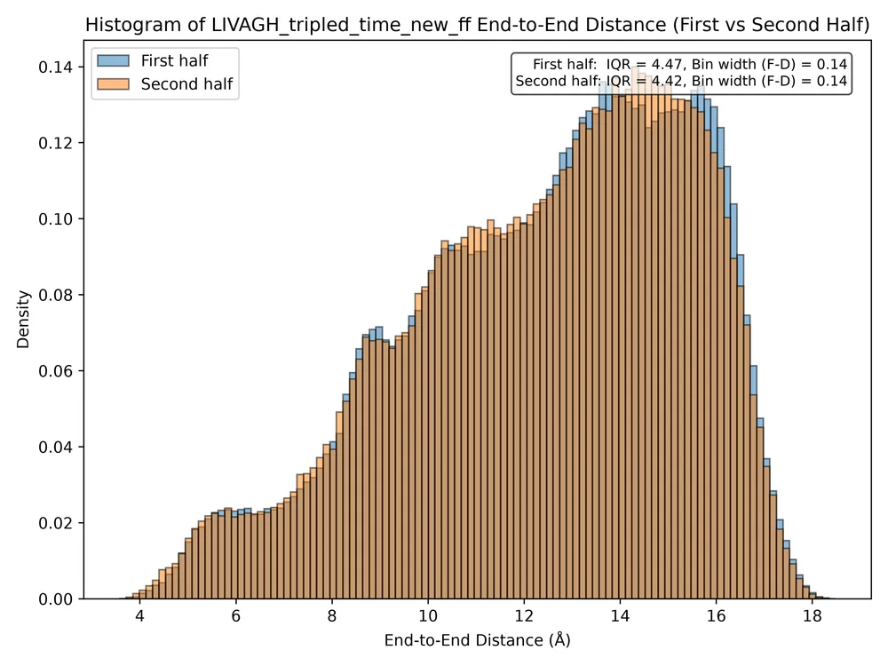
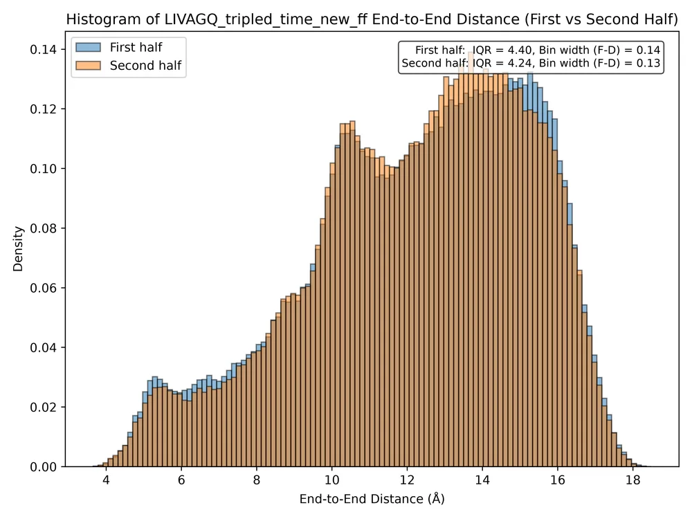

Compare / End-to-end distance histogram (peptide 1), first vs second half
End-to-end distance histogram (peptide 1), first vs second half
Distribution of the peptide-1 end-to-end distance (Cα of L1 to Cα of X6, :2@CA–:7@CA) over all frames of each half.
Caveat. Plot titles and file names in the three LIVAGE folders say LIVAGH_CC / _CN / _NN: a label typo in combined_first_second_half.py. The data are the LIVAGE system.
Columns
Show







Related new figures
- End-to-end distance of peptide 1 (Leu Cα – residue-X Cα), half 1 vs half 2 · Halved structure